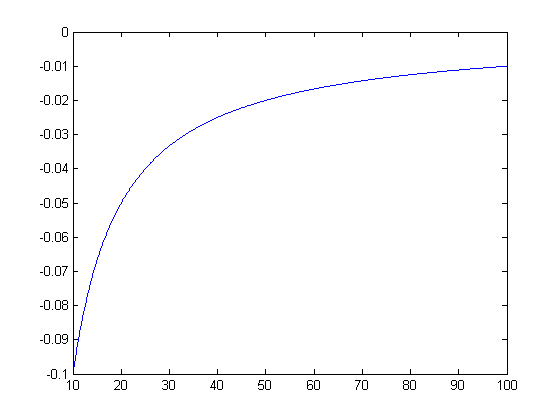
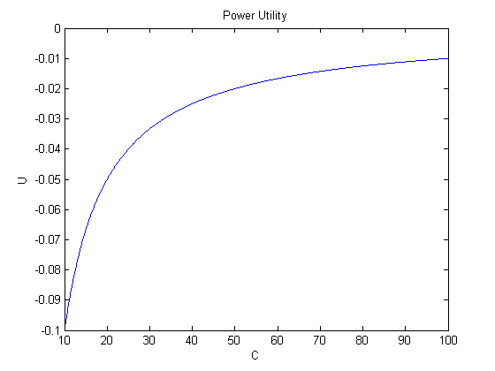
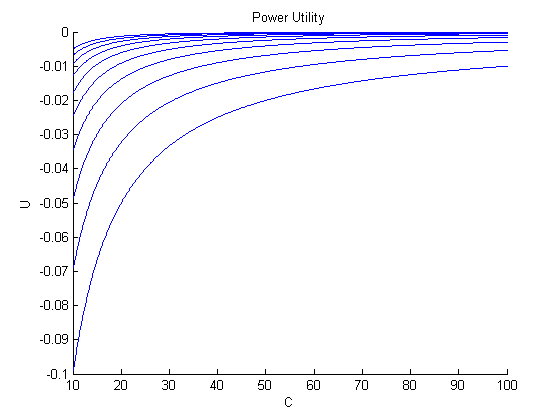
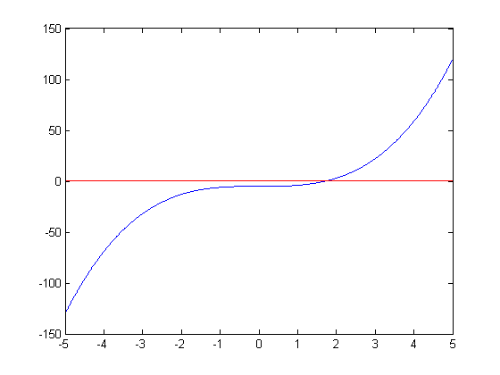

Getting Started with MATLAB Programming
MATLAB stands for MATrix LABoratory - it is a matrix-based system that allows you to do scientific calculations and programming for tasks like regressions, optimization problems, etc.
MATLAB is NOT the Economics - but it is an excellent TOOL for Economics, and we will use it extensively in ECON 4360.
We are going to start with a simple introduction to MATLAB. WARNING! MATLAB has many, many features and capabilities, so this introduction is neither complete nor comprehensive. But today, you will learn the basics of most of the things you will need to do your work for this course. Today, we'll do some examples to show you the basics of how MATLAB works and get you well on your way to being about to explore the rest of it.
Exploring MATLAB is fun! You should feel free to experiment with it. (Don't worry - you won't break it!). MATLAB is intuitive and easy to use, and the help files can show you how to do just about anything.
Contents
Understanding Basic Windows
The Command Window is the main control window. You can enter commands following the >> prompt. Try it now: At the >> prompt, enter:
3 + 4
ans =
7
You'll see that MATLAB reports the answer is 7. Note that since we didn't assign the result to any variable, a temporary variable called "ans" was created to store the result.
While you can use MATLAB like a calculator, you'll usually want to assign the results of your mathematical operations to variables so you can refer to them later.
Now, let's assign the result of 3 + 4 to a variable, x. Type at the >> prompt:
x = 3 + 4
x =
7
You'll see that MATLAB now reports that x = 7. What MATLAB now does is store a variable in memory called "x" with a value of 7.
This bring us to our next window: The Workspace Window. The Workspace Window shows you all the variables that MATLAB currently has stored in memory. WARNING! What MATLAB has stored in memory are NOT saved - i.e., if you close MATLAB and re-open it, these variables are "lost". More on saving in a bit...
Now, try typing the following at the >> prompt:
% y
You'll see can error message that tells you MATLAB doesn't know what "y" is. Now type at the >> prompt:
y = 5;
Now, you'll see that MATLAB has added a variable "y" to the Workspace and assigned it a value of 5. Note that this time, there was no output displays. Why? If you end a command with a semicolon (";"), the command executes "silently" - i.e., no output is displayed.
You can also see that the history of all commands - those executed silently and otherwise - are displayed in The Command Window. You can easily repeat earlier commands by double-clicking on them in the Command Window, or repeat/edit them by pressing the up arrow key.
Now, suppose we want to save the results of our MATLAB session. At the command prompt, type:
save results.mat
Now, you will see a file called "results.mat" in The Current Directory Window. Notice that MATLAB shows you the "path" of the current folder you are "working in". You can change this folder by clicking on the drop down menu. You can also create a new folder. Creating different folders for different programs and assignments helps keep your work organized. Try it now.
Right click (anywhere) in The Current Folder directory and select "New Folder". Rename the folder to "Intro".
Now move the file "test.mat" into the folder "Intro", and double-click on it. You have now changed the "working directory".
Files will always save or load from the current working directory. Let's try it now. At the command prompt, type:
clear
You'll see that all the variables have been erased from the Workspace. To re-load them, type:
load results.mat
You'll see that all of the variables we previously saved are now loaded back into the Workspace.
Working with Matrices
MATLAB is a MATrix language. All variables represent matrices - even scalars (they are 1x1 matrices) and vectors (they are 1xN or Nx1 matrices).
Let's create a 3x3 Identity Matrix. Type at the >> prompt:
I = [1 0 0; 0 1 0; 0 0 1]
I =
1 0 0
0 1 0
0 0 1
MATLAB now stores the variable "I" as a 3x3 Identity matrix. Note that you can enter matrices directly using brackets with spaces or commas to separate elements and semicolons to separate the rows.
You can also create matrices quickly by using the following commands: eye, zeros, or ones. Try this now. At the >> prompt, type:
anotherI = eye(3)
anotherI =
1 0 0
0 1 0
0 0 1
Now try creating a column vector of 5 ones and assigning it to a variable called "z'. Next, create a column vector b by hand. Type:
z = ones(5,1) b = [1; 2; 3]
z =
1
1
1
1
1
b =
1
2
3
You can perform simple matrix operations - it's easy; you just have to know the commands. Create a matrix by typing:
A = [1 2 3; 4 5 6; 7 8 9]
A =
1 2 3
4 5 6
7 8 9
You can take the transpose of A and assign it to B by typing:
B = A'
B =
1 4 7
2 5 8
3 6 9
You can add A and B and assign the result to C by typing:
C = A + B
C =
2 6 10
6 10 14
10 14 18
You can multiply each element of C by 4 and assign it to D by typing:
D = 4.*C;
Note that element-wise operations are preceded by a ".". For example, type:
E = A.*B
E =
1 8 21
8 25 48
21 48 81
Now type:
F = A*B
F =
14 32 50
32 77 122
50 122 194
You get very different answers. F is a result of "matrix multiplication", while E results from multiplying the (1,1) element of A with the (1,1) element of B, the (2,1) element of A with the (2,1) element of B, etc.
Now, suppose we have a system of equations Ax = b, and we want to solve for x. We can use "matrix division" to solve. Type:
A = [1 2 3; 5 2 8; 9 2 4] b = [1; 2; 3]; x = A\b
A =
1 2 3
5 2 8
9 2 4
x =
0.2500
0.3750
-0.0000
You can also reference particular elements inside a matrix. The element in row (i) and column (j) of A is referred to by A(i,j). For example, to get the value from A that is in the first row and second column, type:
a = A(1,2)
a =
2
You can also get entire rows or columns by using the ":". For example, to get the first row of A, type:
r = A(1,:)
r =
1 2 3
This command tells MATLAB to take all the column elements from A that are in the first row.
The ":" notation is very useful. Try typing:
a = 1:10
a =
1 2 3 4 5 6 7 8 9 10
Now type:
a = 1:0.5:10
a =
Columns 1 through 7
1.0000 1.5000 2.0000 2.5000 3.0000 3.5000 4.0000
Columns 8 through 14
4.5000 5.0000 5.5000 6.0000 6.5000 7.0000 7.5000
Columns 15 through 19
8.0000 8.5000 9.0000 9.5000 10.0000
And next:
a = 10:-1:1
a =
10 9 8 7 6 5 4 3 2 1
As you can see, use of the colon can be very efficient.
There are also convenient functions that are built into MATLAB. For example, the "inv" command will take the inverse of a matrix. To solve our system Ax = b again, we can write:
x = inv(A)*b
x =
0.2500
0.3750
0
Other common functions include "max", "min", "sum", "mean", "std", and "var". The functions "log", "exp", "sqrt", and "abs" are also built in.
Working with M-Files - Scripts
Most of the time, we won't want to work directly in The Command Window. Why? Because when you want to execute a sequence of commands, it's inconvenient to execute them one-at-a-time.
MATLAB will execute sequences of commands that are stored in ".m" files. There are two types - script files and function files. We'll start with script files.
Open a new script file by clicking on File > New > Script.
You should always include "header" lines at the top of your script files that indicate (at a minimum) the file name, a brief description of what the program does, your name, and the date. You can enter comments using the percent "%" marks. These are unexecuted lines of codes and are very usuful to remind yourself what files and functions are for.
Programming code should always be "neat" and well-commented. You don't need to go crazy with your comments, but as a general rule-of-thumb, you should have enough comments that you are able to come back to a program after a while and not have to spend much time figuring out what it does.
Basic Plotting
First, we're going to illustrate some basic plotting functions.
Suppose we want to see what u(c) = (1/(1-gamma))*c^(1-gamma) looks like for various values of gamma.
Create variables that will store two different values of gamma.
gamma2 = 2; gamma3 = 2.3;
Now, create a variable that will store the range of consumption values we want to look at. The command "linspace" tells MATLAB to create a vector of 1000 values, equally spaced, from 10 to 100.
c = linspace(10,100,1000);
Now, create a variable that stores the utility of each of these values for consumption.
u2 = (1/(1-gamma2))*c.^(1-gamma2); u3 = (1/(1-gamma3))*c.^(1-gamma3);
Next, we're going to plot u2.
plot(c,u2);
We can also add a title and labels to our plot.
plot(c,u2); title('Power Utility'); xlabel('C'); ylabel('U');
We can also graph different functions on the same plot by using the "hold" command. It's a good idea to plot different functions in different colors or with different symbols and add a legend.
plot(c,u2); hold on plot(c,u3,'--r'); title('Power Utility'); xlabel('C'); ylabel('U'); legend('gamma = 2','gamma = 2.3'); hold off

Working with M-Files - Functions
Suppose you wanted to plot "many" different values of gamma? This could get very time consuming... You can create a function to do tasks that are repeated many times.
Now, click on File > New > Function
Now... We're going to create a file called "myfun.m"...
The first line of this file declares the function name, input arguments, and output arguments. Without this line, the file would be a script file. You should save the file with the same name as that listed in the first line here. Type the following (but without the "%"'s):
% function [utility] = myfun(c,gamma) % utility = (1/(1-gamma))*c.^(1-gamma); % end
Now, let's do the graph again.
plot(c,myfun(c,2)); hold on plot(c,myfun(c,2.3),'--r'); title('Power Utility'); xlabel('C'); ylabel('U'); legend('gamma = 2','gamma = 2.3'); hold off

Note that any variable created in a script file gets stored in The Workspace, while variables created during the execution of a function file are only "temporary". See how there are no variables in the current Workspace named "c" or "gamma" or "utility".
LOOPS
Now, suppose we wanted to create A LOT of these plots. We can do a LOOP for that.
Let's create a column vector called "gamma" that will store all the values of gamma we want to look at.
gamma = linspace(2,3,10)';
We're also going to create an NxM matrix "utility" that will store power utility values for N values of C and M values of gamma. It's always a good idea to initialize matrices that will be filled in with LOOPS.
utility = zeros(1000,10);
Now, we'll write a nested FOR LOOP to populate our matrix.
for i = 1:1000 for j = 1:10 utility(i,j) = myfun(c(i),gamma(j)); end end
There is more than one way of doing this. A more efficient way...
for i = 1:10 utility(:,i) = myfun(c,gamma(i)); end
Now, let's create a new window and use a loop again to plot these values.
figure(2) hold on for i = 1:10 plot(c,utility(:,i)); end title('Power Utility'); xlabel('C'); ylabel('U'); hold off
A word on LOOPS - In general, you should ALWAYS use FOR LOOPS. WHILE LOOPS should be reserved for the rare, but necessary, occassion. The latter are much more prone to getting hung up in an infinite loop. However... we all write infinite loops (oops!) from time-to-time. If you need to break out of one of these loops, CTRL-C or CTRL-BREAK will usually do the trick. Open up a new m-file and try it now...
Here's an infinite "while" loop:
% i = 1; % while (i >= 1) % disp('Oops!'); % i = i + 1; % end
Note that the commands keep executing as long as the statement in (..) is true. WHILE LOOPS can be useful, but they should be used with care.
While we're at it, for all you computer-junkies, MATLAB uses column-major ordering for storage (as opposed to row-major ordering like C), so it's more efficient to loop over columns first, rather than rows. It's even more efficient to use MATLAB's built-in functions when possible.
To see this for yourself, check out the file "test.m"
It contains the following code fragments:
Suppose we have a very big matrix and we want to add all the elements...
A = ones(10000,10000);
Summing First Across Rows...
tic mysum = 0; for i = 1:10000 for j = 1:10000 mysum = mysum + A(i,j); end end toc
Elapsed time is 74.715286 seconds.
Summing First Down Columns
tic mysum = 0; for j = 1:10000 for i = 1:10000 mysum = mysum + A(i,j); end end toc
Elapsed time is 69.555841 seconds.
Using Built-In Functions...
tic mysum = 0; mysum = sum(sum(A)); toc
Elapsed time is 0.065237 seconds.
How fast does your computer solve these problems?
Basic Optimization
Now, on to optimization. To find the "zero" of a function, we can use the command "fzero". We have to specify the function and where we want MATLAB to start looking for the answer.
x = fzero(@(x)x^3-5,0)
x =
1.7100
We can also write our own functions and use them with this command.
Create a new function with the following:
% function [value] = myfun2(x) % value = x^3 - 5; % end
Then try:
x = fzero(@myfun2,0)
x =
1.7100
The command "fsolve" will do the same thing for functions of more than one variable. Create a new function
% function [value] = myfun3(X) % % x = X(1); % y = X(2); % % value(1) = x^3 - 5; % value(2) = y + 5; % % end
Here, we also have to set options for our solver. We have to specify how many iterations (at most) we want MATLAB to try, and how close is "close enough" to zero. Now try:
X0 = [1.7; -5]; options = optimset('maxiter',10000,'tolfun',1e-8,'tolx',1e-8); [answer fval exitflag output] = fsolve(@myfun3,X0,options)
Equation solved.
fsolve completed because the vector of function values is near zero
as measured by the selected value of the function tolerance, and
the problem appears regular as measured by the gradient.
answer =
1.7100
-5.0000
fval =
1.0e-15 *
0.8882 0
exitflag =
1
output =
iterations: 3
funcCount: 12
algorithm: 'trust-region-dogleg'
firstorderopt: 7.7911e-15
message: [1x694 char]
Note that "fval" will give you the value of the function at the solution. You should always check that this is close to zero. The variable "exitflag" should be 1 if a solution was found. You can check the help file for the meaning of other errors. The variable "output" contains information about the algorithm and the iterations.
Note that MATLAB is smart, but it's not that smart.. A good initial guess can make the difference between finding a solution and not finding a solution. Try to change the initial guess to the following:
X0 = [0; -5]; options = optimset('maxiter',10000,'tolfun',1e-8,'tolx',1e-8); [answer fval exitflag output] = fsolve(@myfun3,X0,options)
No solution found.
fsolve stopped because the problem appears regular as measured by the gradient,
but the vector of function values is not near zero as measured by the
selected value of the function tolerance.
answer =
0
-5
fval =
-5 0
exitflag =
-2
output =
iterations: 0
funcCount: 3
algorithm: 'trust-region-dogleg'
firstorderopt: 0
message: [1x699 char]
MATLAB can't find the solution now. Why? Let's investigate. Plot the function we're working with.
x = linspace(-5,5,1000); figure(3) plot(x,x.^3-5); hold on plot(x,zeros(1000,1),'r'); hold off
MATLAB is having trouble finding that little dip - the basic solution is to try different starting values.
We can also use MATLAB to solve maximization and minimization problems. Suppose we want to find the minimum of the function x^2. We can write
x = fminunc(@(x)x^2,1,options)
Warning: Gradient must be provided for trust-region algorithm;
using line-search algorithm instead.
Local minimum found.
Optimization completed because the size of the gradient is less than
the selected value of the function tolerance.
x =
0
We can also solve min/max problems with constraints. We can have equality and inequality constraints, and they take the forms of A*x <= b and Aeq*x = beq. Suppose we want to impose the constraint that x < -2. Then we would write:
A = [1]; b = [-2]; Aeq = []; beq = []; x0 = -3; [x fval] = fmincon(@(x)x^2,x0,A,b,Aeq,beq)
Warning: The default trust-region-reflective algorithm does not solve problems
with the constraints you have specified. FMINCON will use the active-set
algorithm instead. For information on applicable algorithms, see Choosing the
Algorithm in the documentation.
Local minimum found that satisfies the constraints.
Optimization completed because the objective function is non-decreasing in
feasible directions, to within the default value of the function tolerance,
and constraints are satisfied to within the default value of the constraint tolerance.
Active inequalities (to within options.TolCon = 1e-06):
lower upper ineqlin ineqnonlin
1
x =
-2
fval =
4
The function fmincon is very versatile. It can also take nonlinear constraints that you specify through a function file, but we won't do that today. See the help file for the syntax and more informaiton.
Now, let's see if we can solve a standard utility maximization problem. Suppose a consumer has a utility function over two goods specified as u(x1,x2) = (1-gamma)^(-1)*x1^(1-gamma) + (1-gamma)^(-1)*x2^(1-gamma), a budget of B = 10, and prices of the goods are p1 = 1 and p2 = 2.
First, we want to maximize utility, so we write a function file to evaluate the expression for possible values of x1 and x2. Name this function "myfun5.m".
% function F = myfun5(x,gamma) % % utility = (1-gamma)^(-1)*x(1)^(1-gamma) + (1-gamma)^(-1)*x(2)^(1-gamma); % % F = -utility; % % end
Next, we figure out the constraints. We have a budget constraint that p1*x1 + p2*x2 = B, so we write the following:
gamma = 2; A = []; b = []; Aeq = [1 2]; beq = 10; x0 = [4 2]; [x fval] = fmincon(@(x)myfun5(x,gamma),x0,A,b,Aeq,beq)
Warning: To use the default trust-region-reflective algorithm you must supply
the gradient in the objective function and set the GradObj option to 'on'.
FMINCON will use the active-set algorithm instead. For information on applicable
algorithms, see Choosing the Algorithm in the documentation.
Local minimum possible. Constraints satisfied.
fmincon stopped because the predicted change in the objective function
is less than the default value of the function tolerance and constraints
are satisfied to within the default value of the constraint tolerance.
x =
4.1391 2.9304
fval =
0.5828
These minimization routines (fminsearch is another one) are very flexible. We could easily do our maximization problem here by just minimizing the negative of our objective function.
Output Display
We can display our results using the "disp" command:
disp(x);
4.1391 2.9304
Or we can make our output "pretty". Of course, you should be reporting results and writing up reports in programs like Microsoft Word or any Tex Editor. However, formatting your display output can be very useful for your own purposes - debugging, etc. (Will you remember a month from now what "x" means? I doubt I will...) We can use the "fprintf" command for this. Details can be found in the Help Files for syntax, but you can get the basic idea from the following:
fprintf('\n The optimal amount of Good One is %4.2f and of Good Two is %4.2f.',x(1),x(2)); fprintf('\n ');
The optimal amount of Good One is 4.14 and of Good Two is 2.93.
What to do Next!
So now you've seen the basics of pretty much everything you need to get up and running with MATLAB. You can click on Help > Product Help and then search for whatever you're looking for. We didn't cover file I/O today, so you may want to start there and see if you can figure out how to read in a basic text file for yourself!